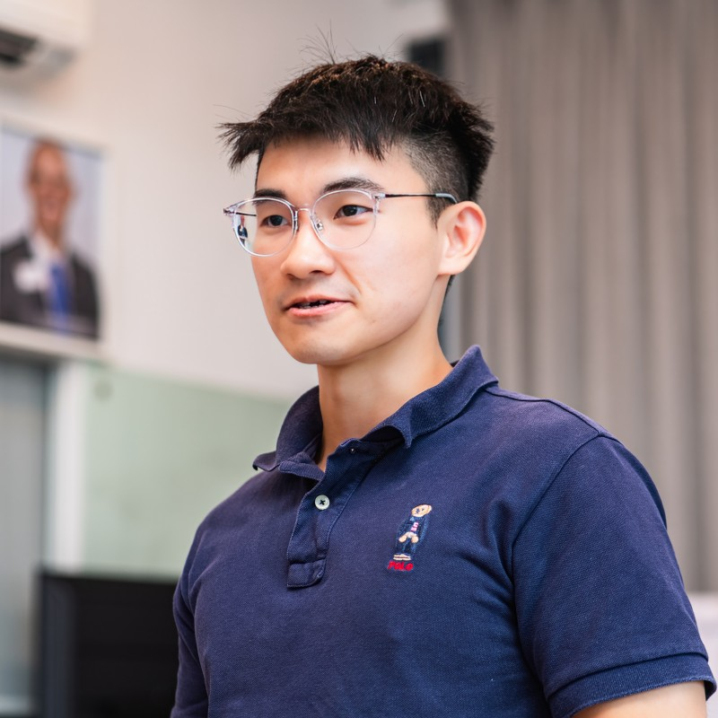

About Davidson Chua
Singapore founder building creator ecosystems, automotive communities, and things that matter
How I got here
I did not start out thinking I would be building communities or working in media. My journey began in a completely different world: marine engineering. I studied at Singapore Polytechnic, earning a Diploma with Merit in Marine Engineering, drawn to the precision and problem-solving nature of how complex systems work together.
That fascination with systems : understanding how things operate, why they break, and how to make them more reliable. became the thread that has run through everything I have done since. Whether looking at a ship's propulsion system, analysing data patterns, or building an online community, I am always asking the same question: how does this actually work?
After polytechnic, I spent time at BP, working in large-scale operations where safety and reliability were not just buzzwords. They were life-or-death imperatives. That experience shaped how I think about building anything: with intentionality, attention to detail, and deep respect for the people who depend on what you create.
Eventually, I made my way to the National University of Singapore (NUS), where I pursued Business Analytics. It was during this time that I started connecting the dots between understanding systems and understanding people. Data tells stories, but only if you know how to listen and, more importantly, if you care about the people behind the numbers.
The shift to building
Somewhere along the way, I stopped being satisfied with just analysing or optimising existing systems. I wanted to create. To experiment. To test ideas that felt like they could create real value, even if they did not fit a traditional job description.
That led to a lot of tinkering: side projects, small experiments, things I built just to see if they would work. Some did. Most did not. But the process taught me more than any job ever could. I learned that building is not about having all the answers upfront. It is about being curious enough to try, disciplined enough to learn from failure, and honest enough to admit when something is not working.
My philosophy: Communities are not just distribution channels. They are relationships built on trust, relevance, and long-term value. The best communities are not transactional. They are transformational.
One of those experiments grew into Autosave, where I focus on community-led brand building in Singapore's automotive space. The automotive world is deeply personal. People do not just own cars; they identify with them. Building a community around that requires authenticity, not just marketing tactics.
At Autosave, I learned that the best communities form when you give people something genuinely valuable: connection, knowledge, or a sense of belonging. Everything else is secondary. Today, Autosave has over 18,000 members, more than 1,500 event attendees, and brand partnerships with names like Mercedes-Benz, Shell, Porsche, and Audi. Autosave was incubated under NUS Enterprise and Block71, and recognised by APAC Insider through the Singapore Business Awards in both 2025 and 2026.
Building Influencees
Everything I built with Autosave pointed to a larger problem in the creator economy. Brands consistently struggled to find and trust creators with confidence. Creators, in turn, had no standardised way to demonstrate their credibility beyond follower counts and screenshots. Decision-making across the industry remained fragmented and manual.
That insight led me to founding Influencees, a creator credibility and discovery platform for Southeast Asia. Influencees is designed to build the trust layer that the creator industry is missing: awards, rankings, verification tools, and a neutral platform for brand and creator partnerships grounded in transparent performance history.
Contributing to what matters
Beyond my own ventures, I contribute to ROADS.sg, a platform focused on road safety in Singapore. Through ROADS.sg, I share practical perspectives on responsible road use and work directly with key stakeholders including the Traffic Police (TP) and Land Transport Authority (LTA). Advocacy does not have to be loud or preachy. It can be creative, data-driven, and grounded in real-world experience.
I have also been featured in The Straits Times on multiple occasions, discussing topics like Singapore's evolution as a tech city, where tech jobs are being created, and how generative AI is reshaping expectations for young professionals.
My journey so far
Graduated with Merit (Highest Distinction). Developed a deep love for understanding how complex systems work.
Gained experience in large-scale operations and safety-critical environments. Learned what it means to build things that people depend on.
Connected systems thinking with data and people, bridging technical and business perspectives.
Built an automotive creator community in Singapore reaching 18,000 members, with brand partnerships across Mercedes-Benz, Shell, Porsche, Audi, and more. Incubated at NUS Enterprise and Block71, and recognised by APAC Insider's Singapore Business Awards in 2025 and 2026.
Road safety advocacy through creative engagement, working with Traffic Police and Land Transport Authority stakeholders.
Multiple features and podcast appearances discussing Singapore's tech ecosystem, job opportunities, and the impact of generative AI.
Building a creator credibility and discovery platform for Southeast Asia, focused on helping brands find and trust creators through standardised credibility signals.
What drives me
At the core, I care about building things that feel useful, honest, and grounded in real experience. I am sceptical of hype and buzzwords. I value execution over ideas. And I believe that the best way to understand something is to try building it yourself.
I am drawn to problems where there is a gap between how things are and how they could be, especially when that gap involves people, relationships, or communities.
Long-term thinking over short-term wins. Communities and trust take time to build, and there are no shortcuts.
Transparency and honesty in everything I do. People can sense when you are being authentic versus when you are optimising for metrics.
Learning by doing. The best insights come from real-world experience, not theory or frameworks.
Collaboration with people who care deeply about their work. The best outcomes happen when everyone involved is genuinely invested.
What is next
My primary focus right now is building Influencees into Southeast Asia's leading creator credibility platform, starting with Singapore's automotive and lifestyle creator segments before expanding regionally across Malaysia, Indonesia, the Philippines, and Thailand.
I am particularly interested in how communities can drive real value in ways that traditional marketing channels cannot, and in the intersection of technology and human behaviour: not in a manipulative sense, but in understanding how tools can genuinely improve people's lives and livelihoods.
If you are building something interesting, working on problems that matter, or want to have a thoughtful conversation about creator ecosystems, communities, mobility, or how things work, I would love to hear from you.
Let's connect
Whether you want to collaborate, chat about ideas, or just say hi.